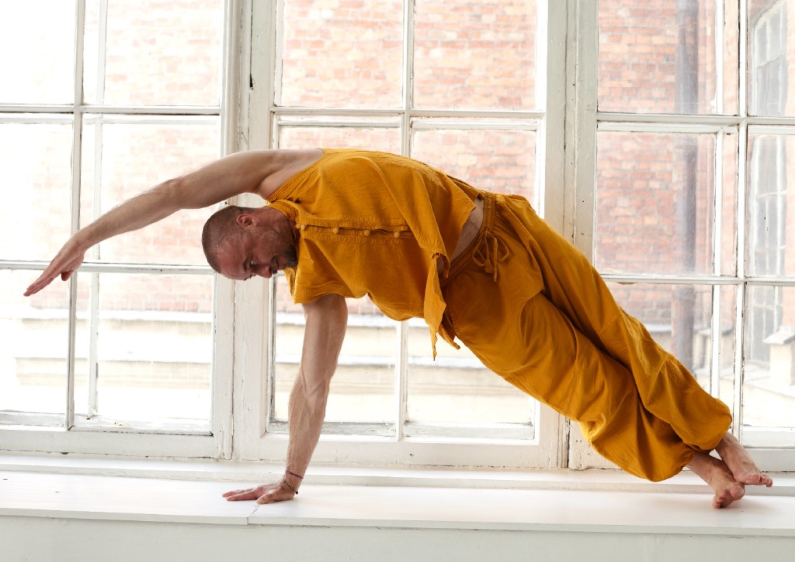
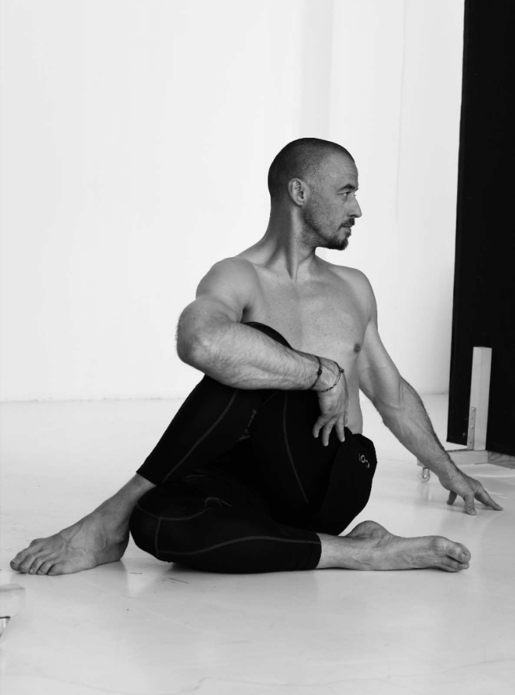
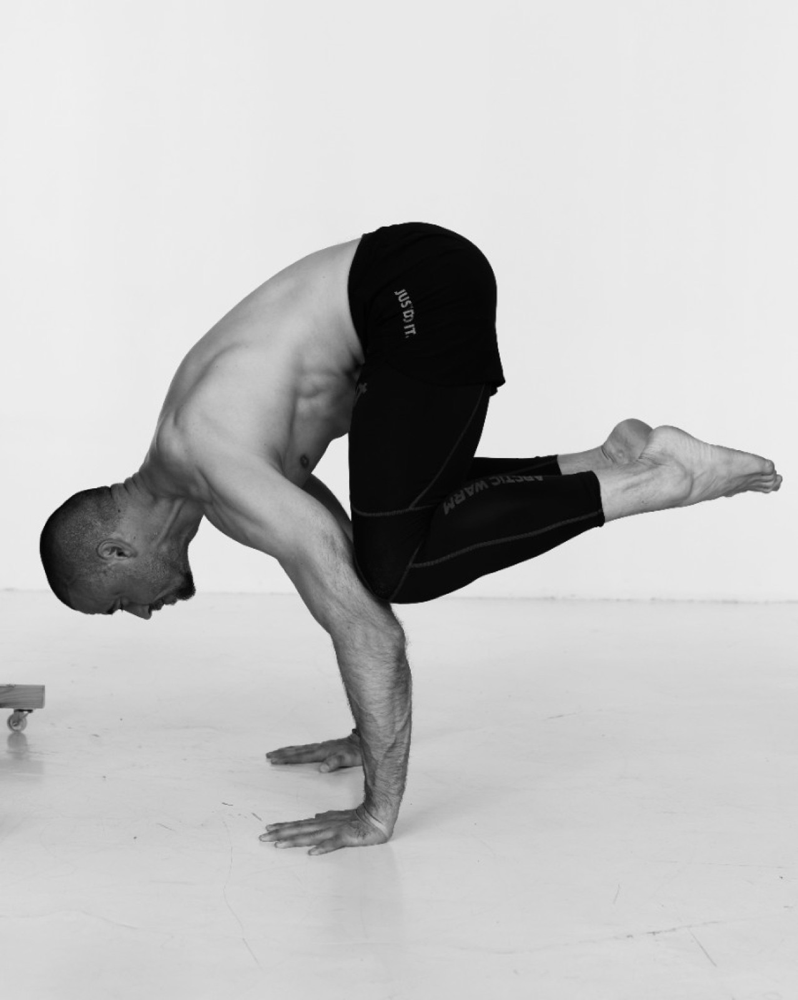
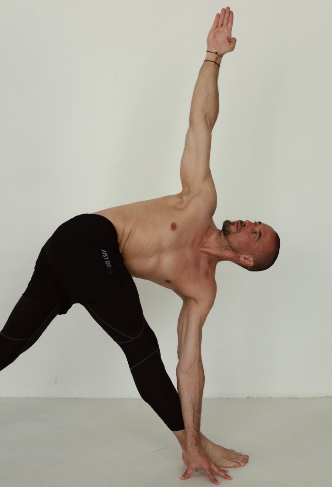
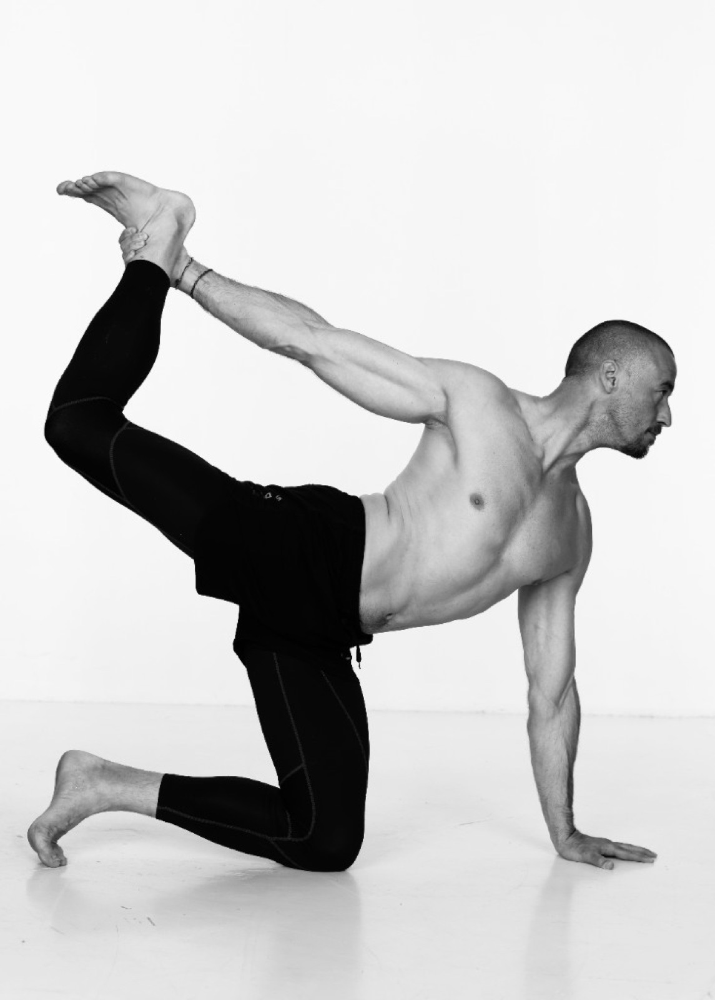
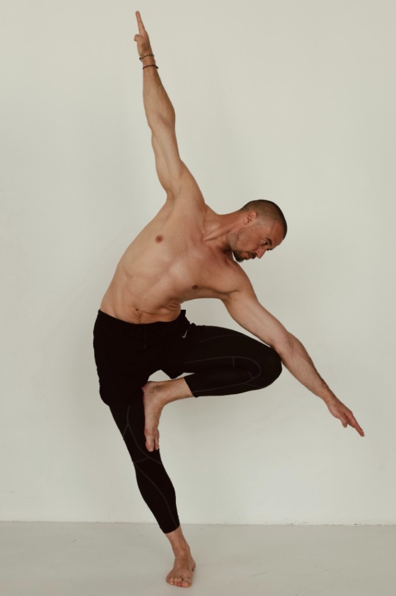
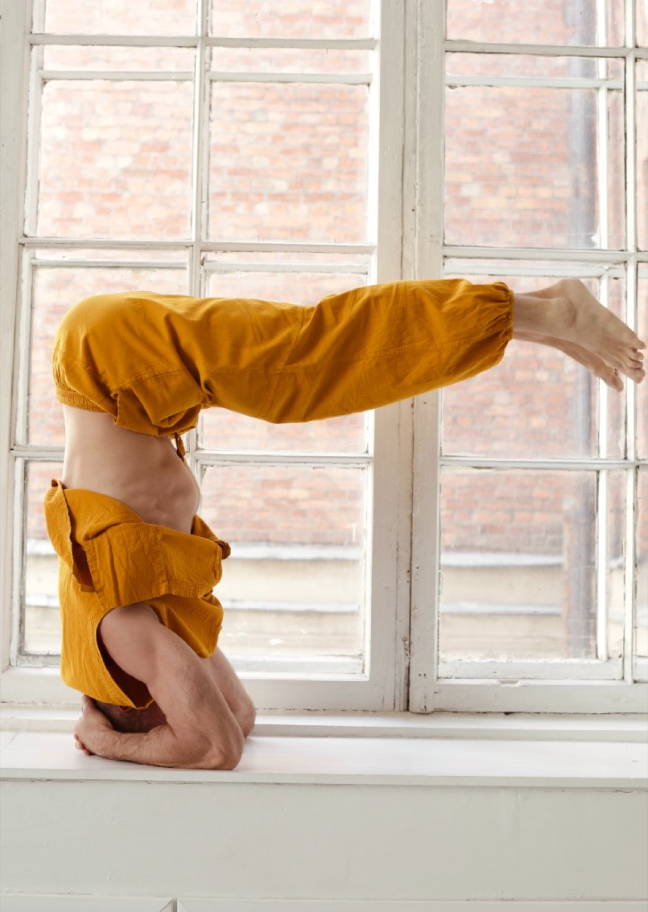

i. Базовый
Тело
24 900 ₽
- 6 практик в записи
- 3 живые лаборатории движения
- Финальная практика онлайн
- Доступ к записям 2 месяца

Мобильность. Стабильность.
Уверенность в движении.
Практика для обычной жизни
Тело должно
двигаться свободно.
Четыре недели практики по мобильности и стабильности: меньше лишнего напряжения, больше понимания своего тела. Не нужно быть гибким или заниматься йогой раньше.
(Слово автора)
Илья — о том, как отличать нужную подвижность от необходимой устойчивости и подбирать практику под себя.
Свободное тело — не самое гибкое. Оно умеет двигаться там, где нужно движение, и держать опору там, где нужна устойчивость.— Принцип курса
(Аудитория)
Для обычной жизни, тренировок и йоги. Не требуется ни специальной подготовки, ни умения садиться на шпагат.
Если много сидите и устаете
Если вы активны или уже практикуете
(Контекст)
Иногда движению не хватает амплитуды. Иногда — контроля. Если просто тянуть сильнее, можно продолжать двигаться за счёт соседней зоны.
На курсе учимся замечать, что именно делает тело: где ему полезно добавить движение, где нужна опора и как дозировать нагрузку без гонки за формой.
Это обучение движению, а не лечение. При хронической боли и ограничениях упражнения подбирают индивидуально: такому подходу соответствуют рекомендации ВОЗ; обзор Cochrane не показывает превосходства йоги над другими упражнениями для функции спины.
(Метод)
Классическая хатха-йога на пересечении с опытом реабилитации и прикладной кинезиологии Ильи. Фокус — на качестве движения.
Исследуем доступный диапазон движения в грудной клетке, тазобедренных, плечах и других зонах. Не добиваемся рекордов растяжки: ищем движение, которое можно использовать в жизни.
Учимся сохранять опору и управлять нагрузкой: корпус, таз, лопатки, стопы. Устойчивость нужна не вместо движения, а чтобы оно стало точнее и комфортнее.
Замечаем привычные компенсации и выбираем подходящий вариант практики. Цель месяца — не просто пройти шесть занятий, а научиться лучше понимать своё тело и продолжать самостоятельно.




(Запросы)
Не нужно узнавать себя во всём списке. Достаточно одного понятного запроса на более свободное движение.
(Программа)
Каждая запись решает конкретную задачу. Можно пройти их последовательно, а затем возвращаться к нужной зоне.
Сначала Илья объясняет, на что смотреть в движении, затем вы практикуете. Между записями — три живые лаборатории движения с вопросами и разбором техники. Завершаем общей практикой онлайн.
На финальном онлайн-занятии возвращаемся к ключевым принципам и обсуждаем, как продолжать заниматься после курса.
(Результат)
Задача — научиться выбирать движение осмысленно, а не выполнить идеальную асану.
Результат зависит от исходного состояния и регулярности практики; одинаковых обещаний для всех здесь нет.
(Первая часть пути)
Начинаем с тела. Остальное — потом.
«Точка опоры · Тело» — самостоятельный четырёхнедельный курс и первая часть большого маршрута. Позже появятся следующие направления: «Состояние» и «Практика». Сейчас запись открыта только на «Тело»; ничего дополнительно покупать не нужно.
(О курсе)

Практичный месяц с Ильёй: разбираемся, как двигаться свободнее и устойчивее в своём теле — без соревнования с чужой гибкостью.
Первый раз можно пройти объяснение и практику целиком. При повторении — включать нужное занятие и заниматься в своём темпе. Срок доступа: 2 месяца в базовом тарифе и 4 месяца в профессиональных.
(Формат)

В течение четырёх недель вы проходите шесть занятий в записи в удобное время. Каждое посвящено конкретной зоне и задаче: от устойчивого центра до движения всего тела.
Три живые лаборатории с Ильёй помогают разобрать свои вопросы: где нужна подвижность, как заметить компенсацию в асане и как подобрать вариант практики под себя. В конце — общая практика онлайн. В тарифах «Проф» и «Проф + цигун» дополнительно есть очная отработка навыков в зале Санкт-Петербурга.
(Автор)
(Живое участие)
Записи дают возможность практиковать в своём ритме. На живых встречах можно задать вопрос и увидеть принцип движения в действии.
Ищем, где сейчас полезнее работать с амплитудой, а где — с опорой. Разбираем вопросы участников без попытки поставить диагноз по экрану.
Смотрим на базовые положения и привычные обходные движения: почему нагрузка уходит не туда и как сделать упражнение понятнее.
Подбираем посильные варианты и собираем личный ориентир: что повторять дальше, когда хочется двигаться свободнее.
(Участие)
Во всех вариантах — четыре недели курса, шесть записанных практик, три живых разбора и финальная практика онлайн.
i. Базовый
24 900 ₽
ii. Проф
29 900 ₽
iii. Проф + цигун
49 900 ₽
Цены действуют с 11 октября 2026 года. Ранняя стоимость до 10 октября завершилась. Условия оплаты и расписание живых встреч уточним при записи.
(Ваш следующий шаг)
Можно пройти весь месяц онлайн. Если важна очная отработка с Ильёй в Санкт-Петербурге — выбирайте «Проф». А если хотите добавить отдельную практику цигун, есть «Проф + цигун».
Старт — 22 ноября 2026 года.
Оставить заявкуЗаявка откроется в Telegram с готовым сообщением. Отправить её можно после проверки текста.
(Вопросы)
Да. Начинаем с понятных движений и объяснений, а не с сложных асан. Для занятий не нужна подготовка или опыт йоги.
Да. Вы сможете по-новому посмотреть на знакомые положения: где вы двигаетесь свободно, а где компенсируете одной зоной другую.
Нет. Цель курса — не стать самым гибким. Мы учимся сочетать доступную подвижность с устойчивостью и подбирать амплитуду под своё тело.
Расскажите об этом до начала занятий. При боли, травме, после операции или при хроническом заболевании сначала обсудите нагрузку с лечащим специалистом. Курс не заменяет диагностику, лечение или индивидуальную реабилитацию.
Да, шесть основных практик доступны в записи. В базовом тарифе доступ на 2 месяца, в «Проф» и «Проф + цигун» — на 4 месяца. Срок доступа к отдельному курсу цигун уточним при записи.
Нет, базовый тариф проходит полностью онлайн. Очная отработка в зале Санкт-Петербурга входит только в тарифы «Проф» и «Проф + цигун».
Три лаборатории движения и финальная практика входят в онлайн-часть. Точные даты и время сообщим перед стартом потока. Основные шесть практик можно проходить в удобное время.
В «Проф» добавлены очная отработка навыков в зале Санкт-Петербурга, сертификат о прохождении курса и доступ к записям «Тела» на 4 месяца. «Проф + цигун» включает всё это и отдельный 15-модульный курс «Путь карпа».
Да. «Точка опоры · Тело» — самостоятельный курс. Следующие части появятся позже; покупать их сейчас не требуется.
(Заявка)
Выберите формат и оставьте короткую заявку. Мы ответим на вопросы о расписании, очной практике и участии. Начать можно с текущим уровнем подготовки — без сложных асан и гонки за гибкостью.